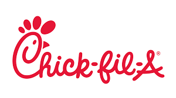
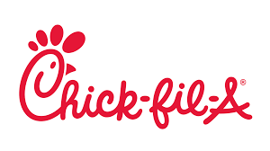
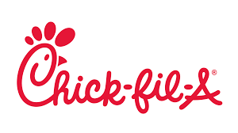

This blog will be teaching any fresh students wondering where to go to eat when living in UNCG. We'll be covering various topics in each resturant that all students should know to get the most value out of their experience and their meal plan.
My three top picks for UNCG:

These three places were the ones I frequented many times while at UNCG, some of these very recognizeable since all of them are in a rough group, like the panda and chick-fil-a both sort of working together since anytime panda isn't open the chick-fil-a is. All of these have at least some sort of student perk which I will go into more detail once you click on their respective links to tell you more about them, but if I had to recommend some places to go to that aren't the dining hall since thats where you should typically be going if you don't make your own food or are simply further than an average student, like students in the spartan village.